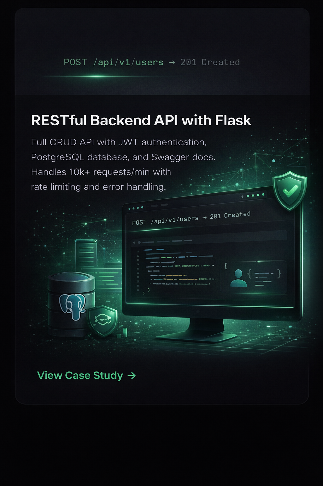

Back to Portfolio
Case Study
Flask REST API Backend
A production-ready REST API with authentication, database layer, pagination, and auto-generated documentation.
A production-ready REST API with authentication, database layer, pagination, and auto-generated documentation.
~80ms
Average response time
20+
API endpoints
95%+
Test coverage

A startup needed a backend API for their web application — user management, product catalog, order tracking, and reporting. No-code tools couldn't handle their data complexity, and enterprise solutions were overkill. They needed something fast, maintainable, and built specifically for their use case.
I designed and built a RESTful API using Flask that delivers clean, well-documented endpoints with proper error handling and security:
@app.route("/api/v1/products", methods=["GET"]) @jwt_required() def list_products(): """ GET /api/v1/products?page=1&per_page=20&category=electronics&sort=-price Returns paginated, filterable, sortable product list. """ page = request.args.get("page", 1, type=int) per_page = request.args.get("per_page", 20, type=int) category = request.args.get("category") sort = request.args.get("sort", "name") query = Product.query if category: query = query.filter_by(category=category) query = apply_sort(query, sort) paginated = query.paginate(page=page, per_page=per_page) products = [p.to_dict() for p in paginated.items] return jsonify({ "data": products, "total": paginated.total, "page": paginated.page, "pages": paginated.pages }), 200
The API was deployed to production with all endpoints tested, documented, and secured. The frontend team used Swagger UI to explore every endpoint without back-and-forth communication. Average response time stayed under 80ms even with filtering and pagination across thousands of records.
Whether it's a full API from scratch, integrating with existing systems, or fixing and optimizing an existing Flask codebase — I can deliver it clean, documented, and production-ready. Let's talk on Fiverr.
Hire Me on Fiverr